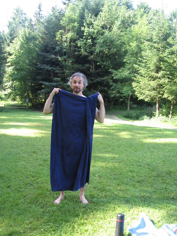

sch.
Oft fällt einem ja gar nicht so sehr auf, dass die eigenen Kinder eine andere Sprache sprechen als man selbst. Aber die wachsen halt eben dort auf, wo sie aufwachsen, mit Kindergartenfreunden und anderen Bekanntschaften, und .. ja.
Umso lustiger ist es dann, wenn man zu einem Wort kommt, das sie nur von einem selbst oder den Grosseltern kennen und deshalb eben so aussprechen, wie sie es dort gehört haben. Frederik sagt zum Beispiel "Inschbrugg". Sehr schön.
hummer.
Frederik und Moritz schauen derzeit sehr gerne die Fernsehserie "Feuerwehrmann Sam", in der eine kleine walisische Stadt mit eigentlich sehr wenigen Charakteren, inklusive eben dem titelgebenden Feuerwehrmann, gezeigt wird. Sowas findet dann natürlich auch in den täglichen Spiel-Szenarien Einzug, so ist Moritz meistens der Feuerwehrmann, während Frederik für sich Tom Thomas, den Hubschrauberpiloten entdeckt hat, der er sein will. Er hat auch neulich schon erklärt, dass wenn er mal gross ist, er Tom heissen will.
Ausserdem kommt für das nun folgende auch noch Vokabular aus Märchen/Geschichten dazu. Jedenfalls begab es sich, dass anscheinend (ich hab vorher nicht richtig hingehört) eine Szene mit einer Bergung mehrerer Verletzter gespielt wurde. Wie es scheint, war mindestens eine Tote dabei.
Frederik - [...] und die is aus Kummer gestorben.
Moritz - DA is der Hummer!
Kein weiterer Kommentar.
(Und ja, ich hab die Urlaubs-Fotos und den Urlaubs-Bericht noch in meiner Todo-Liste. Ich habs nicht vergessen.)
prinzen.
Heute, vorhin, Moritz hatte auf dem Kopf eine Kappe von einem Prinzen-Faschingskostüm (mit Feder!):
Moritz - kämpf! kämpf!
Frederik - Prinzen kämpfen nicht, die heiraten!
Eine sehr österreichische Haltung, wie ich finde.
sprache.
Mal wieder eine linguistische Analyse von Frederik:
Wenn wir bei Oma und Opa sind, und der Papa ist dabei, und wenn dann der Papa "Papa" zum Opa sagt, dann glaub ich er meint sich selber.
(also er hat das als lustige Sache erzählt und dabei lachen müssen)
statusmeldung.
Wir sind, übrigens, seit ca heute aus dem Urlaub zurück und wieder an der Arbeit (die Kinder weilen noch in Dornbirn weil der Kindergarten noch zu hat). Photographisches Beweismaterial zu unserem ersten "richtigen" Urlaub gibts demnächst (inklusive Bewegt-Bilder) in diesem Theater.
rad.
Seit gestern traue ich mich zu sagen, dass Frederik radfahren kann, jedenfalls de facto, da ich (bzw auch Susanne) ihn nur noch beim losfahren und anhalten sichern (Hände an den Schultern) muss. Das Anhalten geht auch oft schon alleine. Größtes Problem (abgesehen eben vom losfahren) ist derzeit noch, dass er, wenn er an einem Schaufenster oä entlang fährt, den Kopf zur Seite dreht und sich selber im Spiegel zuschaut. Und dann lenkt er natürlich unwillkürlich auf die Seite weg und muss stehenbleiben (hingefallen isser gottseidank deshalb noch nicht).
Moritz wird auch selbstbewusster auf dem Laufrad, schön langsam ist tatsächlich ein Geschwindigkeitsgewinn gegenüber zu Fuss feststellbar. Aber nur wenn er grad will, sonst gibts tendentiell eher Stillstand.
meta.
Frederik, grade vorhin im Kinderzimmer:
Wir spielen, dass wir zwei Kinder wärn, die zuhause sind und spielen!
... was schon ziemlich meta ist (mal abgesehn vom schönen Konjunktiv). Ein nicht viel weniger interessanter Satz kam kurz davor von Moritz, nämlich
Wir sind der Arzt!
da bin ich mir noch nicht ganz sicher, wie ich das interpretiere.
camping.
Ende Juni/Anfang Juli waren wir zum Zelten (weil wir das mal ausprobieren wollten um den Kindern eine Freude zu machen) in Isny. Dort gibts einen Campingplatz namens WaldbadcampingIsny, der ist sehr nett und enthält auch einen Badesee (wie der Name schon erahnen lässt).
Ein Beispielfoto:

Herr B aus V, überrascht
Jedenfalls hab ich das zum Anlass genommen, neue Bilder hochzuladen. Zusätzlich noch von Frederiks zweiter Geburtstagsfeier (mit den Kindergartenkindern) und unserem Besuch am Attersee.
Die neuen Bilder finden sich am Ende des Juni-Ordners und dann im Juli-Ordner.
alles.
Kurze Durchsage von Frederik:
Wenn man fünf is, dann kann man alles, gell?
cool.
Wie mir berichtet wurde, gab es heute folgendes Zwiegespräch im Badezimmer:
Frederik - Was machst du?
Susanne - Wäsche rein tun. [Anm: in die Waschmaschine]
Frederik - Du machst immer die coolsten Sachen, wenn wir nicht dabei sind.
addendum2.
Irgendwas ist mit der Reihenfolge der Bilder zB im Dezember ein bissl durcheinander. Ich bitte das zu entschuldigen, bis ich mich drum kümmern kann.
addendum.
Ich werd dann demnächst auch noch ältere Handy-Bilder mit einpflegen und auch schaun was auf Susannes Gerät so rumliegt.
wow.
So, erstens mal hab ich einen ganzen Haufen Bilder hochgeladen, inklusive Frederiks Geburtstagsfeier und Ostern. Zusätzlich in älteren Ordnern (erstmal zurück bis November glaub ich, muss ich noch checken) noch Bilder von meinem Handy mit reingetan.
Beispielbild:

Ausserdem hab ich jetzt die Foto-Seite und auch alle Fotos, die dort liegen, mit Passwortschutz versehen. Ich schick dann heute noch ein Mail an alle, die mir einfallen, wo das Passwort drinsteht. Wer kein Mail kriegt und meint, er sollte aber schon das Passwort wissen, kann sich an mich wenden und dann schauen wir, ob wir das beide so sehen. Die Gründe dafür sind vielfältig, aber im Endeffekt isses einfach "besser" so.
marille.
Eigentlich is das ja fies, wenn man sich hier so über Missverständnisse lustig macht. Aber eigentlich mach ich mich auch nicht lustig, sondern finds halt soooo nett. Wollt ich nur mal sagen.
Jedenfalls Frederik:
Bevor man jemanden aufschneidet, weil man was an seinem Herz wegschneiden muss, gibt man ihm eine Aprikose. Dann stirbt er nicht.
Ich hab kurz gebraucht, bis mir ein Licht aufging.
Jedenfalls hat ihm das der Florian im Kindergarten erzählt. Wir haben dann mal korrigiert und versucht zu erklären, was gemeint ist.
verschwunden.
Grade eben waren wir auf der Suche nach dem Griff der elektrischen Kinderzahnbürste. Die Aufsteckbürsten lagen da, aber der Griff (wo der Akku und der Motor drin sind) war nicht auf seinem Platz am Ladegerät. Kurze Nachfrage bei Susanne ergab, dass Moritz heute als Letzter damit beschäftigt war (kurz vor dem Besuch beim Zahnarzt).
Also den Moritz gefragt, wo er den Griff hingetan hat. Er deutet auf die Ladestation und meint "da hin". Kurze Pause. "Und dann is sie verschwunden."
Aha.
Also frag ich "und weisst du auch, wohin sie verschwunden ist?"
Daraufhin er "ja" und lief zum Wäschetrockner und holte triumphierend den Griff dort raus.
Man muss immer noch mal weiter nachfragen ...
floeten.
Grade sind wir auf Kurzurlaub in Gnadenwald, weil langes Wochenende ist. Heute ist Fronleichnam, ein Feiertag der am Land traditionell zuerst mit einer Prozession und dann mit Frühschoppen begangen wird. Jetzt grade ist bei der Kirche (ein Stück weit weg) der Frühschoppen im Gange und man hört die Blaskapelle spielen.
Moritz hat vorhin die Haustüre geöffnet und kurz rausgehört, dann gerufen "da ist Musik draussen". Dann hat er die Türe wieder zugemacht und erklärt
ich hab die Türe zugemacht, damit keine Flöten reinkommen!
Na gottseidank sind wir davor jetzt geschützt!
Kurz darauf hat er eine Ameise gesehen und gerufen
ich muss sie totmachen!
ist wie von der Tarantel gestochen aufgesprungen, gerannt um die Fliegenklatsche zu holen, wieder zurückgerannt und hat wie wild auf den Boden damit gehaut.
Also auch vor Ameisen sind wir gut geschützt.
nerv.
Hin und wieder kommt es vor, dass Frederik von Moritz genervt ist. Also nein, das kommt sehr häufig vor, sind ja Brüder. Meistens endet das mit Geschrei in der einen oder andern Form von einem oder beiden. Wie man sichs halt erwartet.
Am Samstag allerdings gabs was Neues, nämlich dass Frederik konstant der Meinung war, dass Moritz was falsch macht, und das dann mit so typischem augenverdrehen-Überlegenheits-genervt quittiert hat, wie das .. ja ältere Kinder halt machen. Sehr schön. Jedenfalls äusserte sich das ein einem sehr genervt vorgetragenen
MA-HO-RITZ!
(mit Pausen dort wo die Striche sind) geäußert.
Ich hab mich voll anstrengen müssen nicht laut zu lachen.
Moritz hat einfach überhaupt nicht drauf reagiert.
brüder.
Heute gabs einen sehr schönen Dialog. Es gab irgendeine Anschuldigung seitens Susanne (Inhalt egal) gegen Frederik:
F - Nein, das hab ich nicht gemacht, auf keinen Fall hab ich das gemacht!
M - Doch, auf einen Fall hast du das gemacht!
sohn.
Und es begab sich, dass Susanne den Kindern erklären wollte, warum sie im Bus lieber nicht möchte, dass sie eine offene Saftflasche in der Hand halten:
Susanne - und wenn der Bus plötzlich bremsen muss, dann ist alles nass!
Frederik - dann wird alles nass!
Mein Sohn!
anatomie.
Eine kurze Anatomie-Lektion von Moritz heute morgen:
Bäuche haben gar keine Hände! Nur Hände haben Hände.
zitate.
Zwei völlig aus dem Zusammenhang gerissene Begebenheiten, einfach weil ichs im jeweiligen Moment sehr lustig fand. Erst Moritz, Susanne hatte grade erklärt dass wenn die Kinder nicht jetzt sofort (also endlich) daherkommen, wenn sie jetzt nochmal ruft, dann dürfen sie keinen Michel anschauen.
Susanne - Eins! Zwei! ... Drei!
Moritz - *kommt gerannt* vier, fünf, sechs, sieben ..
Und dann hab ich grad dem Frederik erklärt, dass besonders spitzige Gegenstände nicht auf dem Boden rumliegen sollten:
ich - .. oder wenn man barfuss ist ..
Frederik - ja ich bin ja fa .. fu .. fab .. mit nackigen Füssen!
krank.
Grade vorhin hab ich versucht, Moritz seinen Pyjama anzuziehen. Dabei hatte er einen Playmobil-Weihnachtsmann in der Hand und erklärte:
Moritz - Der Weihnachtsmann is krank.
Ich - Oh je, was hat er denn?
Moritz - BLUUT!
viking.
Und weil wir schon dabei sind, Moritz, keine 10 Minuten davor:
Ich bin ein Wikinger! * grrrrr *
drachen.
Kurze Durchsage von Frederik:
Drachen kenn ich schon eine Ewigkeit.
That is all.
opa.
Frederik kann jetz mit seinem Opa einen Verein aufmachen.
Er ist nämlich grade auf dem Sofa vorm Fernseher beim Michel-schauen eingeschlafen.
mammut.
Letzten Sonntag waren wir im HöhlenSchauLand in Hürben (Giengen an der Brenz), ein recht interessantes "Erlebnismuseum", das bei einer der vielen Höhlen hier in der Gegend, in dem Fall der Charlottenhöhle, errichtet wurde. Gegenüber gibts auch einen sehr netten grossen Spielplatz, wo die Kinder einiges an Spass hatten. Im Sommer werden wir definitiv auch mal die Höhle anschauen gehn.
Jedenfalls gibts in dem Museum verschiedene Exponate, unter anderem auch ein Modell von dem mumifizierten Mammut-Baby Dima (Link führt zur Wikipedia-Seite einer anderen Mammut-Mumie, aber Dima wird dort auch erwähnt). Frederik fragte mich dann, was das ist und ich hab ihm eben das erklärt, was dort auf der Tafel stand, nämlich dass das Mammut-Baby krank war und in eine Schlammgrube gefallen ist und ertrunken.
Eine halbe Stunde später (dazwischen haben die zwei sich vor allem in der "Bärenhöhle" aufgehalten) sind wir nochmal, diesmal zu viert vor dem Exponat gestanden und Frederik erklärt seiner Mama, dass das ein krankes Baby war, das in eine Grube undsoweiter.
Moritz, auf Susannes Arm (damit er nicht wegrennt und Sachen angreift) machte ein mitfühlendes Gesicht und erklärte (mit Schulterzucken hinten dran):
Der hat sich selber totmacht!
glocke.
Beide Kinder (und Susanne und ich auch) sind derzeit ein bissl erkältet. Nicht mehr allzu schlimm, das Fieber von letzter Woche is weg (wir habens nur geschafft zwei aufeinanderfolgende Besuche, die uns mit den Kinder geholfen haben anzustecken, somit hier eine Entschuldigung an meine Mutter und auch den Onkel Bile), aber die Kindernasen rinne n halt und müssen immer wieder geputzt werden.
Heute morgen auf dem Weg zum Auto sagt Frederik plötzlich
ich hab eine Rotznase!
und verlangt Abhilfe. Soweit so gut. Direkt im Anschluss dann allerdings eine linguistische Analyse:
wenn hier zwei so lange Strahlen rauskommen, dann sagen Oma und Opa dazu "Rotzglocke". Sagt man das in ihrem Land so?
Hab ich dann bejaht und er war zufrieden. Aber es weist mich zum wiederholten Mal darauf hin, dass wenn die eigenen Kinder woanders aufwachsen als man selbst, dass die dann auch eine andere Sprache als ihre eigene wahrnehmen. Also eigentlich ja logisch, aber .. ja.